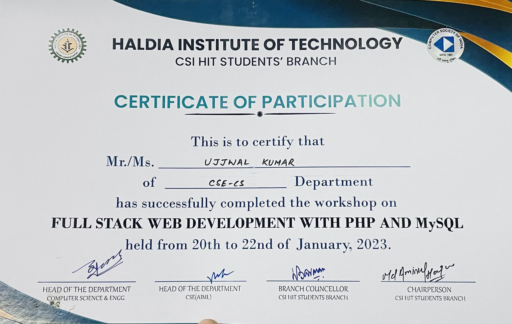

Summary
Experienced web developer proficient in crafting dynamic and user-centric web solutions. Skilled in Java programming language and adept in Data Structures and Algorithms (DSA), bringing a solid foundation in software development principles. With a keen eye for detail and a passion for problem-solving, I consistently deliver high-quality code while adhering to best practices.
Committed to continuous learning and staying updated with the latest industry
trends to enhance project efficiency and effectiveness.
Education
- Matriculation fron SD Public High School with 60.8% of marks
- Intermiduate from S.G.D Patliputra High School with 73.6% of marks
- Currently Persuing Btech in Haldia Institute of Technology with Comuter science an Engineering Cyber secrurity
Work Experience
- Developed a [brief description of the project].
- Implemented features using Java programming language.
- Utilized DSA concepts to improve the performance of algorithms.
- Presented project findings and demonstrated problem-solving skills.
Skills
Programming Languages:
Web Development:
- Proficient in developing dynamic and responsive web applications.
- Experience with front-end technologies such as HTML, CSS, and JavaScript.
- Familiarity with back-end development frameworks like Spring Boot (if applicable).
Data Structures and Algorithms (DSA):
- Strong understanding of fundamental data structures such as arrays, linked lists, and trees.
- Proficiency in implementing and analyzing algorithms for sorting, searching, and optimization.
- Ability to apply DSA concepts to solve real-world programming challenges.
Version Control:
- Experience with version control systems like Git for code management and collaboration.
Problem-solving:
- Adept at identifying and resolving technical issues efficiently.
- Demonstrated ability to approach problems systematically and devise effective solutions.
Collaboration:
- Effective team player with excellent communication and collaboration skills.
- Experience working collaboratively in project-based environments to achieve common goals.
Awards & Certification
Certificate for workshop complition in web development of Computer society of India

My Hobbies
- Exploring new technologies and coding projects
- Solving puzzles and brain teasers
- Outdoor activities like hiking and cycling
My Contact